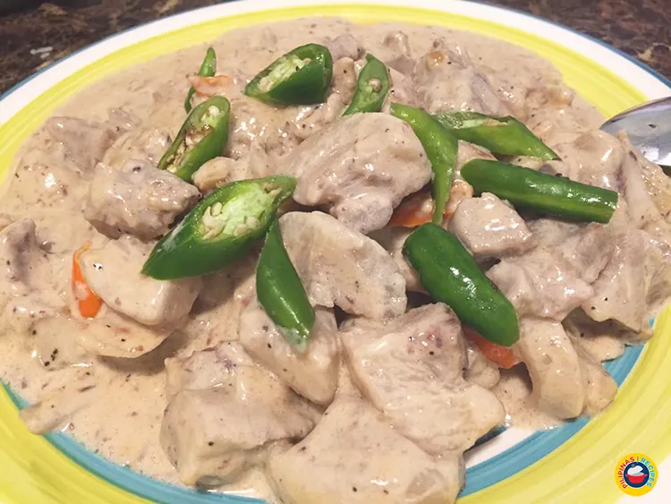
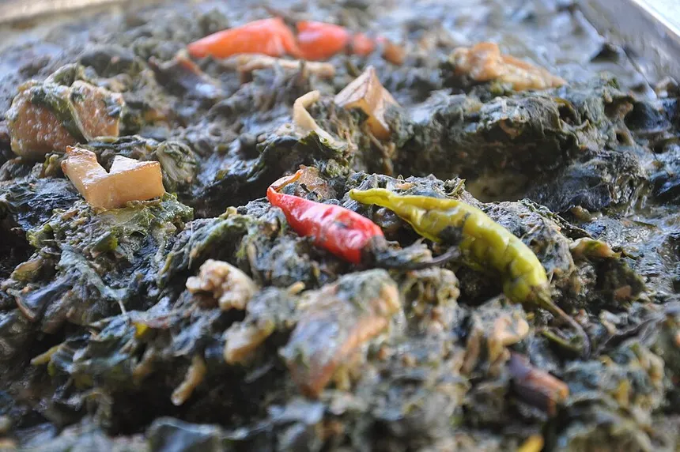
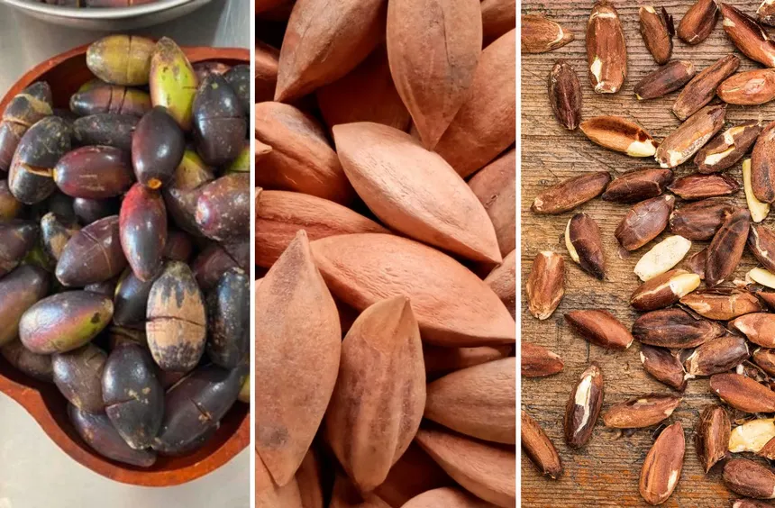
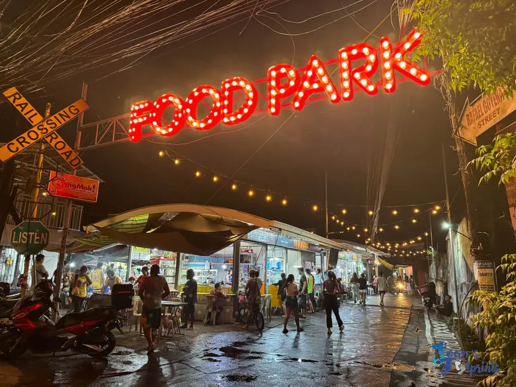

Food &
Cuisine
Gata at siling labuyo — coconut milk and bird's eye chili. Two ingredients. One of the Philippines' most fearlessly delicious regional cuisines.
Gata + labuyo
= everything ?
Almost every iconic Bicolano dish runs on two things: gata (coconut milk) and siling labuyo (bird's eye chili). The result is food that is rich and fiery at the same time, a slow burn you don't want to stop.
In Legazpi, this food isn't a tourist performance - it's carinderia reality. The best Bicol Express costs around under ₱80. Try out Bicolano Foods around. They're Very Delicious !.
What to eat
in Legazpi
All of these dishes are honest, none of them tame. Eat at least one before you leave.

🌶️Bicol ExpressBicol Express
Pork slow-cooked in coconut milk with an avalanche of labuyo chili. Fiery, creamy, deeply savory. The dish that put Bicol on the map, find it in a turo-turo pot along carinderias !

🍃LaingGulay na Natong
Dried taro leaves simmered in coconut cream with shrimp paste and chili until thick and deeply flavored. Deceptively simple, impossibly good. One of those dishes that gets better the longer it cooks.

🥜Pili SweetsPili Nuts & Sweets
Bicol's prized nut. Candied, salted, in pastillas, or pressed into oil. Every pasalubong store in the city carries them. Don't leave without some !

🍢Hepa StreetsHepa Street Food Park
A lively strip of food stalls and local vendors operating side by side. Affordable, casual, and very Legazpi. Good for an evening out with the team after a shoot, the kind of place you end up staying longer than planned.
Skip the mall.
Find the carinderia.
The best Bicolano food is not in a restaurant. It's in a turo-turo. You point, they scoop, here's where to go in Legazpi.